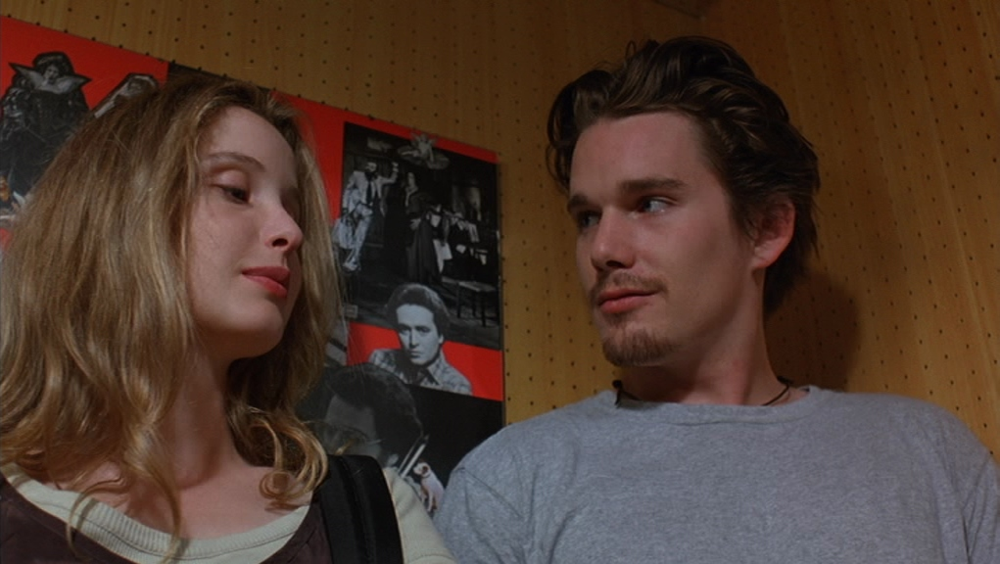
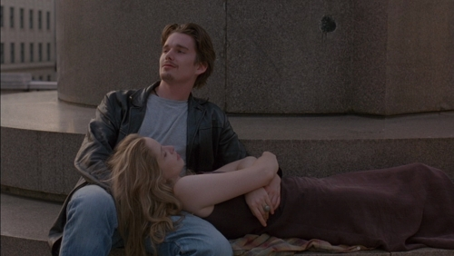

Antes Del Amanecer


La película sigue a Jesse, un joven estadounidense, y Céline, una joven francesa, que se encuentran en un tren y desembarcan en Viena, donde pasan la noche caminando por la ciudad y conociéndose uno a otro.